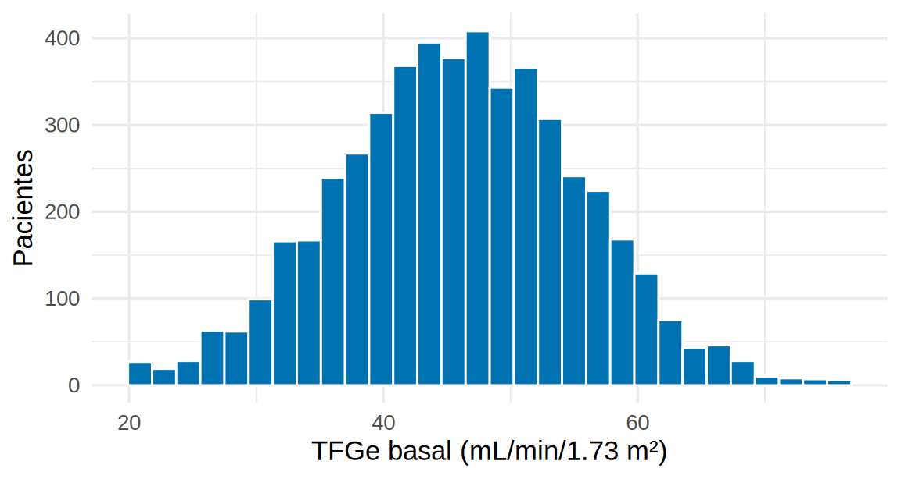

Quarto: informes reproducibles
Un documento Quarto (.qmd) combina texto, código y resultados en un solo archivo. Al renderizarlo, Quarto ejecuta el código y genera un informe (HTML, Word o PDF) con tablas y figuras actualizadas. Este libro entero está escrito en Quarto.
Si mañana llegan 50 pacientes nuevos al registro, no rehaces el informe: renderizas de nuevo. Y si tu tutor pregunta “¿cómo calculaste la TFGe?”, la respuesta está en el documento.
Anatomía de un .qmd
Un documento tiene tres partes:
---
title: "Análisis descriptivo del registro de ERC"
author: "Tu nombre"
date: today
format:
html:
toc: true
code-fold: true
execute:
warning: false
---
## Métodos
Se incluyeron `r nrow(ckd)` pacientes del registro.
```{r}
#| label: tfg
#| echo: true
mean(ckd$tfg_basal)
```
::: {.callout-tip}
## Tip
Los cuadros se escriben con tres dos puntos.
:::| Parte | Qué contiene |
|---|---|
Encabezado YAML (entre ---) |
Título, autor, formato de salida y opciones globales |
| Texto (Markdown) | Títulos con #, negritas con **, listas con -, tablas, fórmulas $...$
|
Bloques de código (```{r}) |
Código R que se ejecuta al renderizar |
Opciones de bloques de código
Se escriben con #| al inicio del bloque:
| Opción | Efecto |
|---|---|
echo: false |
Oculta el código y muestra solo el resultado |
eval: false |
Muestra el código pero no lo ejecuta |
warning: false, message: false
|
Oculta avisos y mensajes |
fig-cap: "..." |
Pie de figura |
fig-width, fig-height
|
Tamaño de la figura (pulgadas) |
label: fig-xxx |
Nombre del bloque (para referencias cruzadas) |
Código dentro del texto
El código en línea inserta valores calculados en la redacción, de modo que el texto nunca queda desactualizado:
Se analizaron 5000 pacientes; 47 % inició un iSGLT2.
(En el documento fuente, el código en línea se escribe con un acento grave, la letra r, un espacio, la expresión y otro acento grave.)
Figuras, tablas y referencias cruzadas
ggplot(ckd, aes(tfg_basal)) +
geom_histogram(bins = 30, fill = "#0072B2", color = "white") +
labs(x = "TFGe basal (mL/min/1.73 m²)", y = "Pacientes") +
theme_minimal(base_size = 13)
En el texto puedes citar la figura con @fig-tfg: la Figura 1 muestra una distribución centrada alrededor de 46 mL/min/1.73 m².
| variable | media | de | basal |
|---|---|---|---|
| edad | 63.8 | 10.0 | NA |
| hba1c | 7.8 | 1.2 | NA |
| pas | 134.9 | 15.1 | NA |
| tfg | NA | NA | 46.0 |
| tfg | NA | NA | 9.5 |
Los números de figura y tabla se asignan solos y se pueden citar con @tbl-resumen.
Cuadros de aviso (callouts)
Los que ves en este libro se escriben así:
::: {.callout-warning}
## ⚠️ Cuidado
Texto del aviso.
:::Tipos: callout-note (azul), callout-tip (verde), callout-warning (naranja), callout-important (rojo).
Formatos de salida
| Para… | format: |
Nota |
|---|---|---|
| Página web (la más cómoda) | html |
Con embed-resources: true genera un solo archivo para compartir |
| Documento editable | docx |
Útil para enviar a coautores |
| Artículo / tesis | pdf |
Requiere LaTeX (quarto install tinytex) |
| Presentación |
revealjs, pptx
|
Diapositivas desde el mismo código |
Cómo renderizar
- En RStudio: botón Render (o
Ctrl/Cmd + Shift + K). - En la terminal:
quarto render analisis/01_limpieza.qmd. - Para un libro como este:
quarto renderen la carpeta del proyecto.
-
Rutas: el
.qmdse ejecuta desde su propia carpeta; usa un proyecto yhere()(Cap. 4.1). - Objetos del entorno: el documento corre en una sesión limpia; si tu código usa un objeto que solo existe en tu consola, fallará. Define todo dentro del documento.
- Paquetes no instalados: instálalos antes (ver Introducción).
- Un
.qmd= YAML + texto + código; al renderizar se ejecuta todo. - Usa código en línea para que el texto siempre coincida con los resultados.
- Las opciones
#|controlan qué se muestra;eval: falsemuestra sin ejecutar. -
Figuras y tablas se numeran y se citan automáticamente (
@fig-...). - Define todo dentro del documento: así cualquiera lo reproduce.
Ejercicio
Crea analisis/02_resumen.qmd que: (1) lea ckd_isglt2.csv, (2) describa en una frase cuántos pacientes hay y la proporción con albuminuria severa (UACR ≥ 300) usando código en línea, y (3) incluya un histograma de la HbA1c con pie de figura. Renderízalo a HTML.